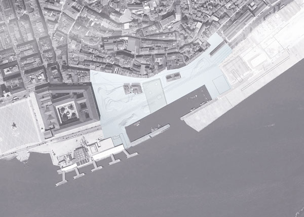
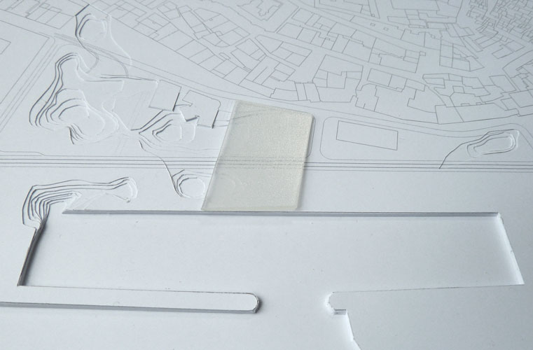
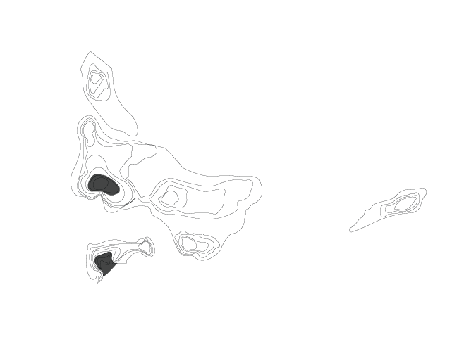
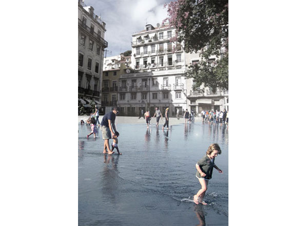
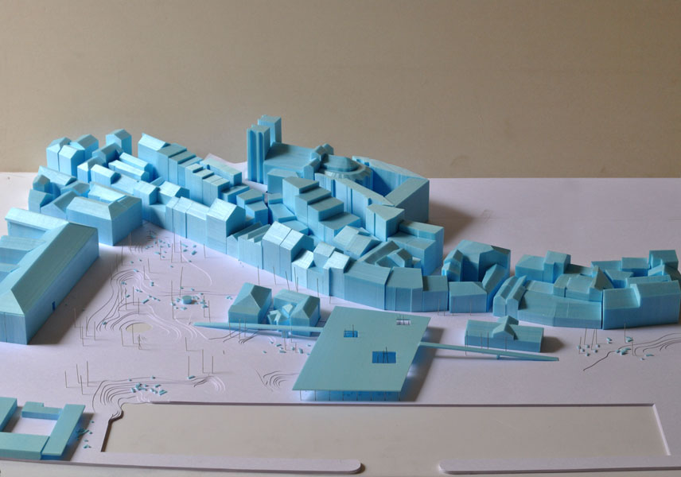
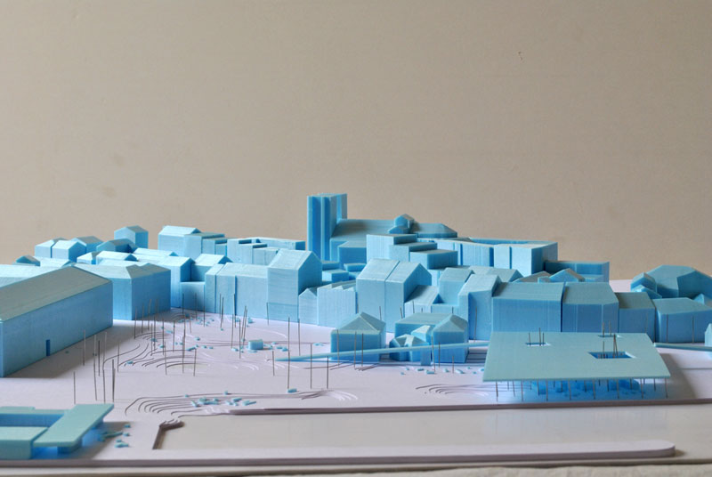
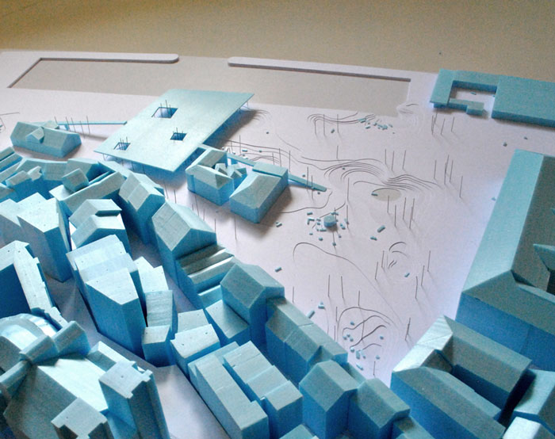
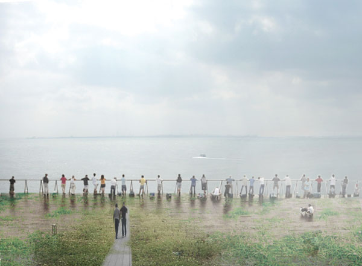

Campo das Cebolas
Competition - Urban Plan - Lisbon - 2012

History
On its initial condition as a beach, this was a territory of ambiguous boundaries whose southern frontier was cyclically defined by the river tide. The programmatic occupation was dependent on the direct relation with the water, through the construction of support structures for the navigation; unload, storage and trade of goods – a space of continuous negotiation between city and river.
Flooding
The new Campo das Cebolas becomes a lively ecosystem, subject to processes of erosion and flooding: a space of reciprocal contamination.
The topography of the territory is modified in order to accommodate areas of possible flooding.
The topographical depressions are connected to the river through a hydraulic system that allows for water to emerge over the urban space when the tide is high, temporarily flooding Campo das Cebolas. The tidal cycles are reintroduced defining the urban space not only in a physical way but also social and symbolical.
The cyclical flooding renews into the collective memory the vulnerability of the city towards the river. The programmatic occupation is positively determined by the possibility of flooding – the space is what the river allows for: a square or a big lake.



The belvedere-building
Contrarily to a closed urban block, the new building continues the public space; it functions as an open multifunctional structure, gathering parking space and retail under the same roof. The roof becomes an elevated square, crossing the road and stretching out to the Doca da Marinha; a new belvedere with unexpected views over the city hill and the avenue axis.




Team: João Moura Fagulha, João Prates Ruivo, Raquel Maria Oliveira. Client: Câmara Municipal de Lisboa..